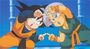

De: La Frikipedia, la enciclopedia extremadamente seria.
De: La Frikipedia, la enciclopedia extremadamente seria. De: La Frikipedia, la enciclopedia extremadamente seria.
|  | Hay frikipedistas que creen que este artículo debería ser fusionado con [[{{{1}}}]]. |
|---|
Para usar esta plantilla no copies el código, simplemente escribe {{fusión|artículo con el que debe fusionarse}}.
Autor(es):